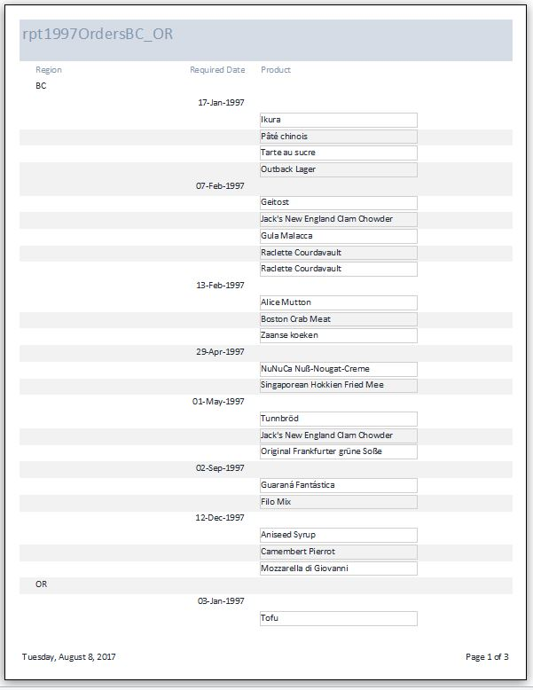

Note: Make sure to follow the instructions on this page.
This assignment is published to your website per Project1 instructions.
Answer the following questions using the Northwind.mdb database file located on the class network drive at: \\store\classes\ YearTerm & courseid & "\ReadOnly\"
Use the Northwind.mdb file and your knowledge of Access to create a report with the following features:
- Customers are located in Region OR or BC
- RequiredDate is between 1/1/97 and 12/31/97
Your report must output only the following fields
- Customer Region, sorted in Ascending order
- RequiredDate, sorted in Ascending order
- ProductID or ProductName from the Order Details
Hint: first create a query, which will return 54 records using the above criteria.
Be very careful in applying the criteria, especially with respect to 'AND' and 'OR'
(50) 4. What are the three tables needed for the query or solution?
Create a report based on the query to properly display the results.
Hint: feel free to experiment and use the Report Wizard. One possible report looks like this:

(100) 5. When done, print the report and save as rpt1997OrdersBC_OR.pdf
To proceed you must have Windows 10 which includes 'Print to PDF' installed. You know it is installed when one of the print dialog box choices is "Microsoft Print to PDF"
Refer to this url and follow these steps. https://www.howtogeek.com/248462/how-to-combine-images-into-one-pdf-file-in-windows/
Create one .pdf (portable document format) file from the form and report .pdf files that you have created for this assignment.
Uuse PDFill to Merge the form and report .pdf files, save it as Formative04.pdf
(100) 6. Upload your file 'Formative04.pdf' to the D2L Assignment Folder 'Formative04'